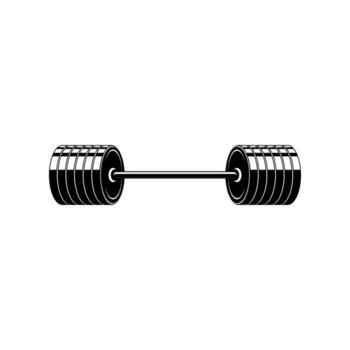

I typically follow a push, pull, legs split!Push includes some kind of incline press, a tricep extension, a shoulder press, and shoudler mobility work
Pull includes a seated row, pullups, a bicep curl, and reverse flys
Legs includes a compound leg movement, leg exstension, hamstring curls, and standing calf raises